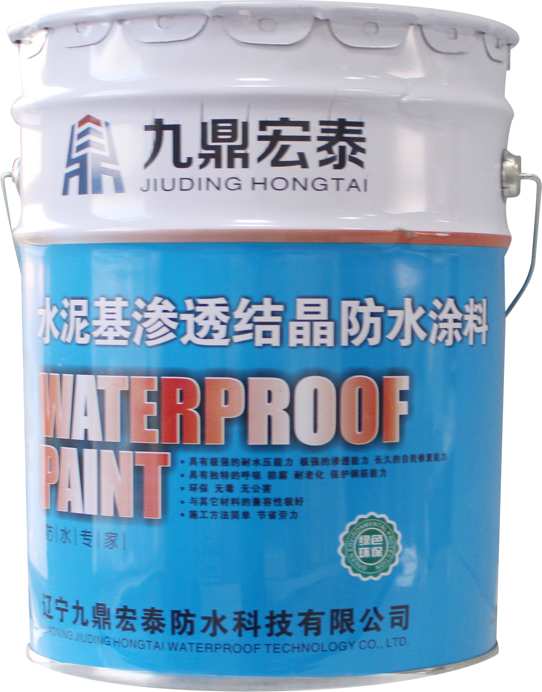

当前位置：
当前位置：
产品概述
水泥基渗透结晶型防水涂料是以硅酸盐水泥、石英砂和多种特殊的活性化学成分研制而成。与水作用后，材料中的活性化学物质通过载体向混凝土内部渗透，在混凝土中形成不溶于水的结晶体，填塞毛细孔道，阻止混凝土开裂、增强混凝土强度、阻止钢筋锈蚀和耐化学腐蚀，从而具备永久性的防水效果。

产品特性
● 渗透深度超强,可增强混凝土的强度。
● 具有独特的自修复、长期抗渗及耐受强水压的性能。
● 涂层具有“呼吸”能力，使混凝土结构基面保持干燥、不潮，具有持久的防水性能。
● 抑制碱骨料反应，防止冻融循环及化学侵蚀。
● 无毒、无公害，施工方法简单，施工成本较低。
执行标准
GB18445-2012 水泥基渗透结晶型防水材料
| 序号 | 试验项目 | 性能指标 | |
|---|---|---|---|
| 1 | 外观 | 均匀，无结块 | |
| 2 | 含水率/% ≤ | 1.5 | |
| 3 | 细度，0.63mm筛余/% ≤ | 5 | |
| 4 | 施工性 | 加水搅拌后 | 刮涂无障碍 |
| 20min | 刮涂无障碍 | ||
应用领域
广泛应用于水泥砂浆、新旧混凝土类建筑物及构筑物的迎水面和背水面防水。如：地下室、地铁、卫生间、厨房、水库、游泳池、储水建筑、涵洞、混凝土路面等。